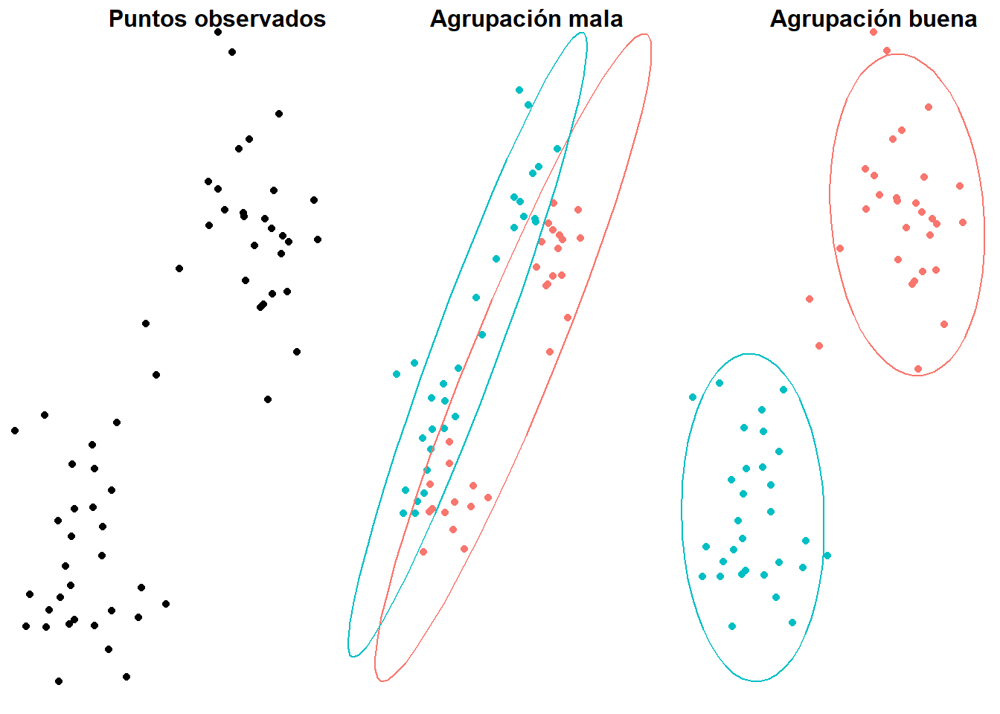
5 Agrupamiento (Clustering)
5.1 Introducción
El término clustering se refiere a una amplia gama de técnicas no supervisadas que buscan identificar patrones o grupos (clusters) dentro de un conjunto de las observaciones. Estas particiones se establecen de manera que las observaciones dentro de un mismo grupo sean similares entre sí y diferentes de las observaciones en otros grupos.
Dado el amplio espectro de aplicaciones del clustering en diversos campos, como la genómica y el marketing, se han desarrollado numerosas variantes y adaptaciones de sus métodos y algoritmos. Estas variantes pueden agruparse en las siguientes categorías principales:
Clustering de Particionamiento: Algoritmos que requieren la especificación previa del número de clusters: K-means, K-medoids, y CLARA.
Clustering Jerárquico: Algoritmos que no requieren especificar el número de clusters: aglomerativos y divisivos.
Aunque existen métodos que combinan ambos tipos de clustering, en la asignatura se incluye únicamente los listados anteriormente porque se hace énfasis en la comprensión del algoritmo que se está utilizando y en la interpretación de los resultados en el contexto del problema.
Dado un conjunto de objetos, queremos clasificarlos en grupos (clusters) basándonos en sus semejanzas y diferencias.
Algunas aplicaciones en biología:
Clasificación jerárquica de organismos (relacionada con la filogenia).
Agrupamiento de genes con patrones de expresión similares.
Agrupamiento de genes por similitud secuencial.
Agrupamiento de proteínas por similitud estructural.
Principios básicos
Homogeneidad: Objetos dentro de un mismo clúster han de ser semejantes (próximos).
Separación: Objetos dentro de clústers diferentes han de ser lejanos.
¿Cómo formalizamos estos principios intuitivos?
Principalmente hay dos tipos diferentes de clustering :
- De partición: Dividimos los objetos en un número prefijado de clusters; posiblemente probamos diversos número de grupos y nos quedamos con el mejor agrupamiento.

- Jerárquico: Agrupamos sucesivamente aglomerativo o dividimos divisivo los objetos o grupos de objetos. Producimos un árbol de clasificación.
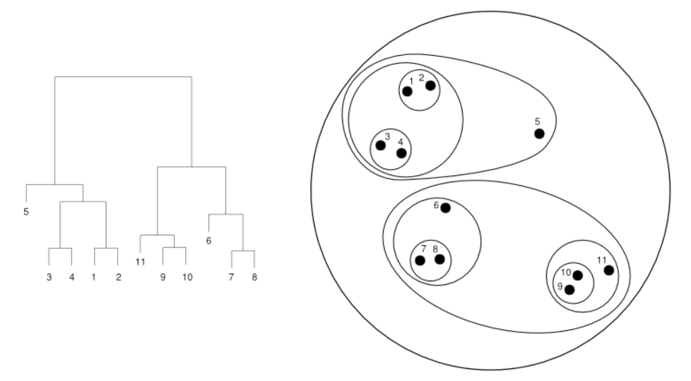
5.2 \(k\)-medias
5.2.1 Introducción
El algoritmo de las \(k\)-medias (\(k\)-means) busca una partición del conjunto de objetos, representados como elementos de un espacio \(\mathbb{R}^n\) en un número fijo \(k\) de clusters.
Estos clusters se identifican por medio de sus puntos medios (means).
Recordad que dado \(\mathbf{x}=(x_1,\ldots,x_n)\in \mathbb{R}^n\), \[ \|\mathbf{x}\|^2=\sum_{i=1}^n x_i^2\in \mathbb{R} \] y que dados \(\mathbf{x},\mathbf{y} \in \mathbb{R}^n\), \(\|\mathbf{x}-\mathbf{y}\|\) es la distancia euclidiana entre \(\mathbf{x}\) y \(\mathbf{y}\).
Fijamos el número de clusters \(k\)
Dados puntos \(\mathbf{x}_1,\ldots,\mathbf{x}_p\in \mathbb{R}^n\), el objetivo es encontrar \(k\) puntos \(\mathbf{c}_1,\ldots,\mathbf{c}_k\in \mathbb{R}^n\) que minimicen \[ SS_C(\mathbf{x}_1,\ldots,\mathbf{x}_p; k)=\sum_{i=1}^p\min_{j=1,\ldots,k} \|\mathbf{x}_i-\mathbf{c}_j\|^2 \] Entonces cada \(\mathbf{c}_j\) definirá el clúster formado por los \(\mathbf{x}_i\) que están más cerca más cerca de él que de cualquier otro \(\mathbf{c}_l\): \[ C_j=\{\mathbf{x}_i\mid \|\mathbf{x}_i-\mathbf{c}_j\|<\|\mathbf{x}_i-\mathbf{c}_l\|\mbox{ para todo }l\neq j\} \] y \[ SS_C(\mathbf{x}_1,\ldots,\mathbf{x}_p; k)=\sum_{j=1}^k\sum_{\mathbf{x}_i\in C_j} \|\mathbf{x}_i-\mathbf{c}_j\|^2 \]
5.2.2 Algoritmo de Lloyd
- Escogemos \(\mathbf{c}_1,\ldots,\mathbf{c}_k\) (como queramos).
- Asignamos cada punto \(\mathbf{x}_i\) al cluster \(C_j\) definido por el centro \(\mathbf{c}_j\) más cercano.
- Substituimos cada centro \(\mathbf{c}_j\) por el punto medio de su cluster \(C_j\): \[\mathbf{c}_j= \Big(\sum_{\mathbf{x}_i\in C_j} \mathbf{x}_i\Big)/|C_j|\]
- Repetimos los pasos anteriores hasta que los clústers se estabilicen, o un número prefijado de iteraciones.
El resultado depende de los \(\mathbf{c}_1,\ldots,\mathbf{c}_k\) iniciales.
Este algoritmo no tiene porque dar un clustering óptimo. Conviene repetirlo varias veces con diferentes valores iniciales.
{kind=link}
{kind=link}
{kind=link}
{kind=link}
{kind=link}
{kind=link}
{kind=link}
{kind=link}
Limitaciones de \(k\)-means:
- No hay un método eficiente y universal para escoger los centros de partida
- No se puede garantizar un óptimo global
- No se puede determinar de manera efectiva el número \(k\) a priori
- No es invariante por cambios de escala (conviene estandardizar datos)
- Sensible a outliers
- Solo aplicable dentro \(\mathbb{R}^n\) con distancia euclidiana
- Encuentra clusters esféricos
5.2.3 Método del codo y test F
El \(SS_C\) óptimo disminuye con \(k\) siguiendo una función más o menos cóncava. Si podemos detectar un \(k\) a partir del cual \(SS_C\) disminuya mucho más lentamente que su anterior, este será el \(k\) recomendable.
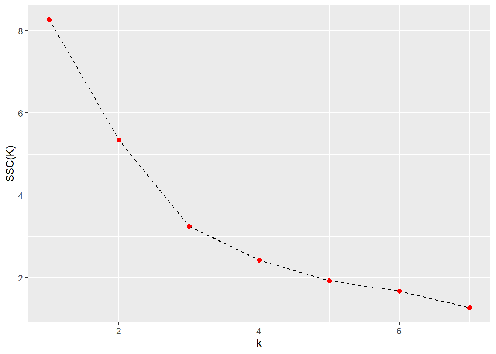
\(k=3\) es el más recomendable
Se calcula
\[F_k=\frac{SS_C(k)-SS_C(k+1)}{\frac{SS_C(k+1)}{p-k-1}}\] Se escoge como p-valor \[P(F_{n,n(p-k-1)}>F_k)\] con \(F_{n,n(p-k-1)}\) una F de Fisher con \(n\) y \(n(p-k-1)\) grados de libertad, y escogemos el \(k\) con p-valor más pequeño Cabe decir que es un método muy utilizado, pero no demasiado justificable.
En el ejemplo del gráfico anterior
| \(k\) | 2 | 3 | 4 | 5 | 6 | 7 | 8 |
|---|---|---|---|---|---|---|---|
| \(SS_C(k)\) | 8.264 | 5.344 | 3.254 | 2.428 | 1.925 | 1.677 | 1.27 |
| \(F_k\) | 8.2 | 9 | 4.42 | 3.14 | 1.63 | 3.2 | |
| p-valor | 0.0014 | 0.001 | 0.02 | 0.06 | 0.229 | 0.06 |
\(k=3\) vuelve a ser el más recomendable
Si el conjunto de puntos es muy grande, todos los \(p\)-valores son cercanos a 0 y este método no es útil.
5.2.4 \(k\)-medias con R
La instrucción básica para ejecutar un \(k\)-means amb R es
kmeans(x,centres,iter.max=...)con:
x, una matriz con los puntos \(\mathbf{x}_i\) como filascentres, una matriz con los centros \(\mathbf{c}_i\) de partida como filas, o el número \(k\)iter.max, el número máximo de iteraciones
Esta instrucción no sigue exactamente nuestro algoritmo, si queréis que ejecute el algoritmo explicado tenéis que poner, además, algorithm="Lloyd".
dades=matrix(c(0.8,1.3,0.8,1.8,1.0,0.9,1.1,
0.1,1.1,1.6,1.4,0.6,1.5,0.1,2,2.1,1.5,2.3,1.8,
1.8,2.3,0.5,0.3,2.2,1,2.5,2,0.5,2,1.5,2.5,1,
0.5,0.5,1,2),
nrow=18,byrow=TRUE)
cent=matrix(c(0.5,0,0.5,1.5,0.5,3),
nrow=3,byrow=TRUE)
kmeans(dades,cent,algorithm="Lloyd")K-means clustering with 3 clusters of sizes 8, 5, 5
Cluster means:
[,1] [,2]
1 1.5375 0.525
2 1.3000 1.600
3 1.1600 2.220
Clustering vector:
[1] 2 2 1 1 2 1 1 3 3 2 1 3 3 1 2 1 1 3
Within cluster sum of squares by cluster:
[1] 4.03375 1.46000 1.76000
(between_SS / total_SS = 57.9 %)
Available components:
[1] "cluster" "centers" "totss" "withinss" "tot.withinss"
[6] "betweenss" "size" "iter" "ifault" Componentes de la list kmeans:
cluster: asignaciones de elementos a clusters
km=kmeans(dades,cent,algorithm="Lloyd")
km$cluster [1] 2 2 1 1 2 1 1 3 3 2 1 3 3 1 2 1 1 3centers: los centros de los clusters
km$centers [,1] [,2]
1 1.5375 0.525
2 1.3000 1.600
3 1.1600 2.220totss: suma de los cuadrados de las distancias de los puntos a su centre
km$totss[1] 17.20944withinss: vector de las sumas, para cada cluster, de los cuadrados de las distancias de sus puntos a su centro
km$withinss[1] 4.03375 1.46000 1.76000tot.withinss: suma dewithinss, \(SS_C\)
km$tot.withinss [1] 7.25375betweenss: diferenciatotss - tot.withinss
km$betweenss [1] 9.955694- Nos interesa
betweenss/totss, que mide la fracción de la variabilidad de los datos que explican los clusters. Cuanto más grande mejor, y viene dado porkmeans
# (between_SS / total_SS = 57.9 %)
9.955694/17.20944 #betweenss/totss[1] 0.5785019km.rand=kmeans(dades,3,algorithm="Lloyd")
km.randK-means clustering with 3 clusters of sizes 6, 4, 8
Cluster means:
[,1] [,2]
1 1.8000 0.4666667
2 1.8250 1.9250000
3 0.8125 1.6000000
Clustering vector:
[1] 3 3 3 1 3 1 1 2 2 2 1 3 3 1 2 1 3 3
Within cluster sum of squares by cluster:
[1] 2.093333 0.535000 3.708750
(between_SS / total_SS = 63.2 %)
Available components:
[1] "cluster" "centers" "totss" "withinss" "tot.withinss"
[6] "betweenss" "size" "iter" "ifault" # (between_SS / total_SS = 67.8 %)
km.rand$tot.withinss[1] 6.337083km2=kmeans(dades,3) #5a repetición ;-)
km2K-means clustering with 3 clusters of sizes 7, 7, 4
Cluster means:
[,1] [,2]
1 0.9285714 1.9571429
2 1.4000000 0.4571429
3 2.0750000 1.6000000
Clustering vector:
[1] 1 1 2 2 1 2 2 3 1 3 2 1 1 2 3 3 2 1
Within cluster sum of squares by cluster:
[1] 1.851429 2.717143 0.927500
(between_SS / total_SS = 68.1 %)
Available components:
[1] "cluster" "centers" "totss" "withinss" "tot.withinss"
[6] "betweenss" "size" "iter" "ifault" # (between_SS / total_SS = 68.9 %)
km2$tot.withinss[1] 5.496071kmeans1 <- ggplot(data=dades, aes(x, y)) + geom_point(color=km$cluster) + theme_minimal()
kmeans2 <- ggplot(data=dades, aes(x, y)) + geom_point(color=km2$cluster) + theme_minimal(){kind=link}
{kind=link}
5.2.5 Ejemplo
El paquete factoextra creado por Alboukadel Kassambara contiene funciones que facilitan en gran medida la visualización y evaluación de los resultados de clustering.
El set de datos USArrests contiene información sobre el número de delitos (asaltos, asesinatos y secuestros) junto con el porcentaje de población urbana para cada uno de los 50 estados de USA. Se pretende estudiar si existe una agrupación subyacente de los estados empleando K-means-clustering.
Si se emplea K-means-clustering con distancia euclídea hay que asegurarse de que las variables empleadas son de tipo continuo, ya que trabaja con la media de cada una de ellas.
data("USArrests")
str(USArrests)'data.frame': 50 obs. of 4 variables:
$ Murder : num 13.2 10 8.1 8.8 9 7.9 3.3 5.9 15.4 17.4 ...
$ Assault : int 236 263 294 190 276 204 110 238 335 211 ...
$ UrbanPop: int 58 48 80 50 91 78 77 72 80 60 ...
$ Rape : num 21.2 44.5 31 19.5 40.6 38.7 11.1 15.8 31.9 25.8 ...Como la magnitud de los valores difiere notablemente entre variables, se procede a escalarlas antes de aplicar el clustering.
datos <- scale(USArrests)Una forma sencilla de estimar el número \(K\) óptimo de clusters cuando no se dispone de información adicional en la que basarse es aplicar el algoritmo para un rango de valores de \(K\), identificando aquel a partir del cual la reducción en la suma total de varianza intra-cluster deja de ser sustancial (en los siguientes apartados se detallan otras opciones). La función fviz_nbclust() automatiza este proceso.
library(factoextra)
fviz_nbclust(x = datos, FUNcluster = kmeans, method = "wss",
diss = dist(datos, method = "euclidean")) +
geom_vline(xintercept = 4, linetype = 2)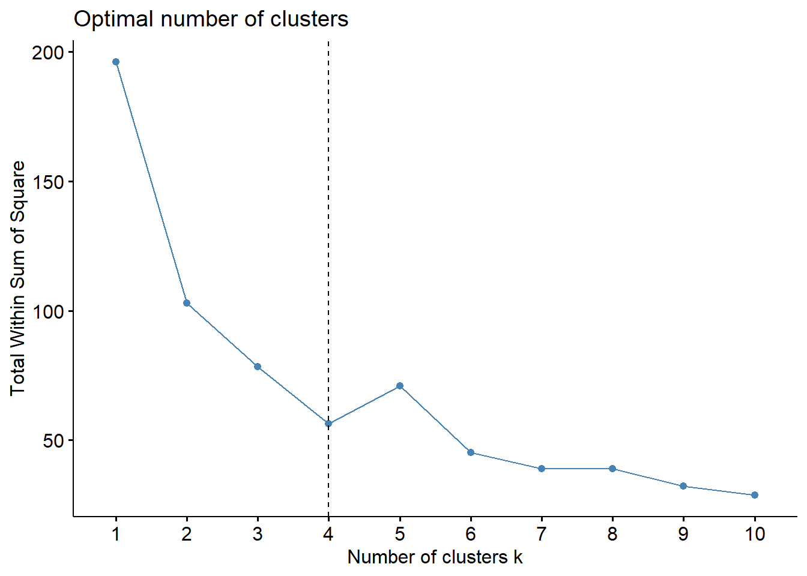
En este caso, a partir de 4 clusters la reducción en la suma total de cuadrados internos parece estabilizarse, indicando que \(K=4\) es una buena opción.
set.seed(123)
km_clusters <- kmeans(x = datos, centers = 4, nstart = 25)El paquete factoextra también permite obtener visualizaciones de las agrupaciones resultantes. Si el número de variables (dimensionalidad) es mayor de 2, automáticamente realiza un PCA y representa las dos primeras componentes principales.
fviz_cluster(object = km_clusters, data = datos, show.clust.cent = TRUE,
ellipse.type = "euclid", star.plot = TRUE, repel = TRUE) +
theme_bw() + theme(legend.position = "none")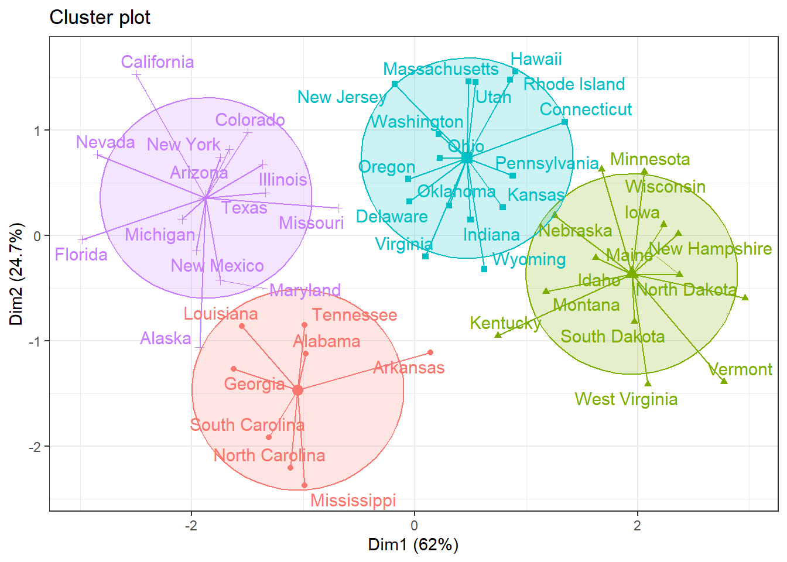
5.3 \(k\)-medoides
Este capítulo es un extracto del libro Clustering y heatmaps: aprendizaje no supervisado por Joaquín Amat Rodrigo, que está disponible en su GitHub. (véase Amat 2017)
5.3.1 Introducción
K-medoids es un método de clustering muy similar a K-means en cuanto a que ambos agrupan las observaciones en \(K\) clusters, donde \(K\) es un valor preestablecido por el analista. La diferencia es que en K-medoids cada cluster está representado por una observación presente en el cluster (medoid), mientras que en K-means cada cluster está representado por su centroide, que se corresponde con el promedio de todas las observaciones del cluster pero con ninguna en particular.
Una definición más exacta del término medoid es: elemento dentro de un cluster cuya distancia (diferencia) promedio entre él y todos los demás elementos del mismo cluster es lo menor posible. Se corresponde con el elemento más central del cluster y por lo tanto puede considerarse como el más representativo. El hecho de utilizar medoids en lugar de centroides hace de K-medoids un método más robusto que K-means, viéndose menos afectado por outliers o ruido. A modo de idea intuitiva puede considerarse como la analogía entre media y mediana.
El algoritmo más empleado para aplicar K-medoids se conoce como PAM (Partitioning Around Medoids) y sigue los siguientes pasos:
- Seleccionar \(K\) observaciones aleatorias como medoids iniciales. También es posible identificarlas de forma específica.
- Calcular la matriz de distancia entre todas las observaciones si esta no se ha calculado anteriormente.
- Asignar cada observación a su medoid más cercano.
- Para cada uno de los clusters creados, comprobar si seleccionando otra observación como medoid se consigue reducir la distancia promedio del cluster, si esto ocurre seleccionar la observación que consigue una mayor reducción como nuevo medoid.
- Si al menos un medoid ha cambiado en el paso 4, volver al paso 3, de lo contrario se termina el proceso.
Por lo general, el método de K-medoids se utiliza cuando se conoce o se sospecha de la presencia de outliers. Si esto ocurre, es recomendable utilizar como medida de similitud la distancia de Manhattan, ya que es menos sensible a outliers que la euclídea.
5.3.2 Ventajas y desventajas
- K-medoids es un método de clustering más robusto que K-means, por lo es más adecuado cuando el set de datos contiene outliers o ruido.
- Al igual que K-means, necesita que se especifique de antemano el número de clusters que se van a crear. Esto puede ser complicado de determinar si no se dispone de información adicional sobre los datos.
- Para sets de datos grandes necesita muchos recursos computacionales. En tal situación se recomienda aplicar el método CLARA.
5.3.3 Ejemplo
El proceso a seguir en R para aplicar el método de K-medoids es igual al seguido en K-means, pero en este caso empleando la función pam() del paquete cluster.
data("USArrests")
str(USArrests)'data.frame': 50 obs. of 4 variables:
$ Murder : num 13.2 10 8.1 8.8 9 7.9 3.3 5.9 15.4 17.4 ...
$ Assault : int 236 263 294 190 276 204 110 238 335 211 ...
$ UrbanPop: int 58 48 80 50 91 78 77 72 80 60 ...
$ Rape : num 21.2 44.5 31 19.5 40.6 38.7 11.1 15.8 31.9 25.8 ...Como la magnitud de los valores difiere notablemente entre variables, se procede a escalarlas antes de aplicar el clustering.
datos <- scale(USArrests)Una forma sencilla de estimar el número \(K\) óptimo de clusters cuando no se dispone de información adicional en la que basarse es aplicar el algoritmo para un rango de valores de \(K\), identificando aquel a partir del cual la reducción en la suma total de varianza intra-cluster deja de ser sustancial. La función fviz_nbclust() automatiza este proceso. En este caso, dado que se sospecha de la presencia de outliers, se emplea la distancia de Manhattan como medida de similitud.
library(cluster)
library(factoextra)
fviz_nbclust(x = datos, FUNcluster = pam, method = "wss",
diss = dist(datos, method = "manhattan"))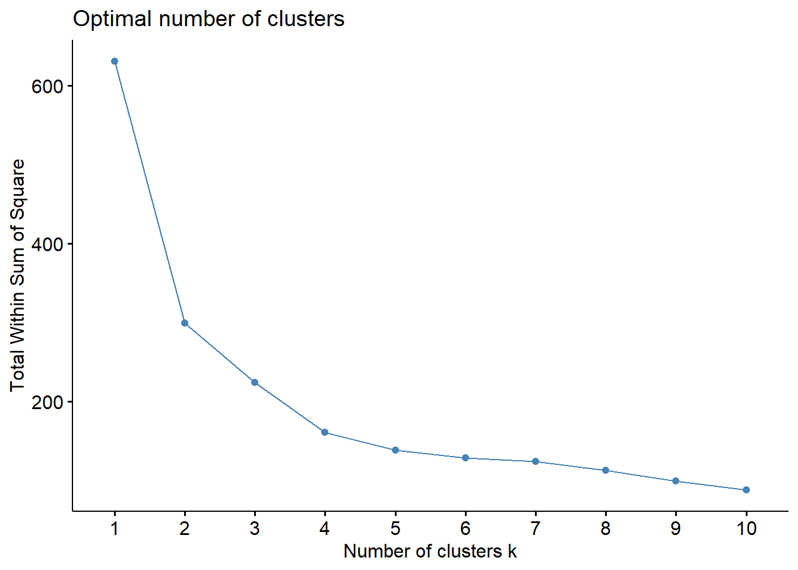
A partir de 4 clusters la reducción en la suma total de cuadrados internos parece estabilizarse, indicando que \(K = 4\) es una buena opción.
set.seed(123)
pam_clusters <- pam(x = datos, k = 4, metric = "manhattan")
pam_clustersMedoids:
ID Murder Assault UrbanPop Rape
Alabama 1 1.2425641 0.7828393 -0.5209066 -0.003416473
Michigan 22 0.9900104 1.0108275 0.5844655 1.480613993
Oklahoma 36 -0.2727580 -0.2371077 0.1699510 -0.131534211
Iowa 15 -1.2829727 -1.3770485 -0.5899924 -1.060387812
Clustering vector:
Alabama Alaska Arizona Arkansas California
1 2 2 3 2
Colorado Connecticut Delaware Florida Georgia
2 4 3 2 1
Hawaii Idaho Illinois Indiana Iowa
3 4 2 3 4
Kansas Kentucky Louisiana Maine Maryland
3 3 1 4 2
Massachusetts Michigan Minnesota Mississippi Missouri
3 2 4 1 3
Montana Nebraska Nevada New Hampshire New Jersey
3 3 2 4 3
New Mexico New York North Carolina North Dakota Ohio
2 2 1 4 3
Oklahoma Oregon Pennsylvania Rhode Island South Carolina
3 3 3 3 1
South Dakota Tennessee Texas Utah Vermont
4 1 2 3 4
Virginia Washington West Virginia Wisconsin Wyoming
3 3 4 4 3
Objective function:
build swap
1.730682 1.712075
Available components:
[1] "medoids" "id.med" "clustering" "objective" "isolation"
[6] "clusinfo" "silinfo" "diss" "call" "data" El objeto devuelto por pam() contiene entre otra información: las observaciones que finalmente se han seleccionado como medoids y el cluster al que se ha asignado cada observación.
fviz_cluster(object = pam_clusters, data = datos, ellipse.type = "t", repel = TRUE) +
theme_bw() + theme(legend.position = "none")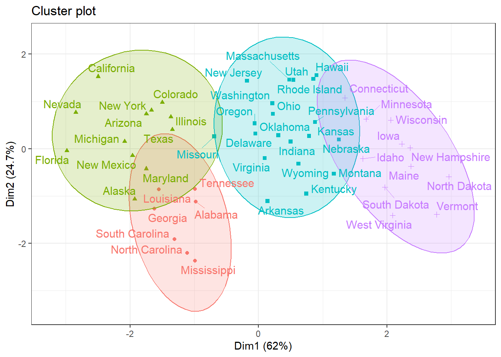
# Como en k-medoids no hay centroides, no se muestran en la representación ni
# tampoco las distancias desde este al resto de observacionesLa función fviz_cluster() no permite resaltar las observaciones que actúan como medoids, sin embargo, al tratarse de un objeto ggplot2 es sencillo conseguirlo.
# Como hay más de 2 variables, se están representando las 2 primeras componentes
# de un PCA. Se tienen que calcular el PCA y extraer las proyecciones almacenadas
# en el elemento x
medoids <- prcomp(datos)$x
# Se seleccionan únicamente las proyecciones de las observaciones que son medoids
medoids <- medoids[rownames(pam_clusters$medoids), c("PC1", "PC2")]
medoids <- as.data.frame(medoids)
# Se emplean los mismos nombres que en el objeto ggplot
colnames(medoids) <- c("x", "y")
# Creación del gráfico
fviz_cluster(object = pam_clusters, data = datos, ellipse.type = "t", repel = TRUE) +
theme_bw() +
# Se resaltan las observaciones que actúan como medoids
geom_point(data = medoids, color = "firebrick", size = 2) +
theme(legend.position = "none")5.3.4 Clara
Una de las limitaciones del método K-medoids-clustering es que su algoritmo requiere mucha memoria RAM, lo que impide que se pueda aplicar cuando el set de datos contiene varios miles de observaciones. CLARA (Clustering Large Applications) es un método que combina la idea de K-medoids con el resampling para que pueda aplicarse a grandes volúmenes de datos.
En lugar de intentar encontrar los medoids empleando todos los datos a la vez, CLARA selecciona una muestra aleatoria de un tamaño determinado y le aplica el algoritmo de PAM (K-medoids) para encontrar los clusters óptimos acorde a esa muestra. Utilizando esos medoids se agrupan las observaciones de todo el set de datos. La calidad de los medoids resultantes se cuantifica con la suma total de las distancias entre cada observación del set de datos y su correspondiente medoid (suma total de distancias intra-clusters). CLARA repite este proceso un número predeterminado de veces con el objetivo de reducir el sesgo del muestreo. Por último, se seleccionan como clusters finales los obtenidos con los medoids que han minimizado la suma total de distancias.
Para más información sobre CLARA y su algoritmo, se recomienda ver la referencia (véase Amat 2017).
5.4 Jerarquico
5.4.1 Introducción
Los métodos jerárquicos parten de una matriz \(D\) de semejanzas o de distancias entre los objetos. Si tenemos \(p\) objetos, necesitamos una matriz
\[D=\left( \begin{array}{cccc} d_{11} & d_{12} & \cdots & d_{1p} \\ d_{21} & d_{22} & \cdots & d_{2p} \\ \vdots & \vdots & \ddots & \vdots \\ d_{p1} & d_{p2} & \cdots & d_{pp} \end{array} \right),\]
donde cada \(d_{ij}\) es la distancia o la semejanza entre el objecto \(i\) y el objecto \(j\).
El primer problema es escoger la semejanza o la distancia a utilizar, según el significado que queramos que tenga el clustering. ¡Es una decisión muy importante!
Partimos de \(p\) objectos, de los cuales hemos tomado \(n\) mediciones, y los organizamos en filas de una matriz
\[X=\left( \begin{array}{cccc} x_{11} & x_{12} & \cdots & x_{1p} \\ x_{21} & x_{22} & \cdots & x_{2p} \\ \vdots & \vdots & \ddots & \vdots \\ x_{p1} & x_{p2} & \cdots & x_{pp} \end{array} \right),\]
donde cada entrada es una frecuencia
Sean
\[x_{i\bullet}=\sum_{k=1}^n x_{ik},\quad x_{\bullet k}=\sum_{i=1}^p x_{ik},\quad x_{\bullet\bullet}=\sum_{i=1}^p x_{i\bullet}=\sum_{k=1}^n x_{\bullet k}\] Se recomienda tomar como distancia
\[d_{ij}=\sqrt{\sum_{i=1}^n\frac{x_{\bullet\bullet}}{x_{\bullet k}}\left(\frac{x_{ik}}{x_{i\bullet}}-\frac{x_{jk}}{x_{j\bullet}}\right)^2}\]
A 3 bosques se han escogido una area de la misma superficie y se han contado els número de ejemplares de 5 plantes.
| Bosque | A | B | C | D | E |
|---|---|---|---|---|---|
| X | 12 | 3 | 8 | 0 | 24 |
| Y | 3 | 22 | 15 | 8 | 11 |
| Z | 0 | 7 | 12 | 20 | 6 |
Tabla con frecuencias marginales:
| Bosque | A | B | C | D | E | \(x_{i\bullet}\) |
|---|---|---|---|---|---|---|
| X | 12 | 3 | 8 | 0 | 24 | 47 |
| Y | 3 | 22 | 15 | 8 | 11 | 59 |
| Z | 0 | 7 | 12 | 20 | 6 | 45 |
| \(x_{\bullet j}\) | 15 | 32 | 35 | 28 | 41 | 151 |
\[\begin{array}{rl} d^2_{XY}=&\frac{151}{15}\left(\frac{12}{47}-\frac{3}{59}\right)^2+\frac{151}{32}\left(\frac{3}{47}-\frac{22}{59}\right)^2+\frac{151}{35}\left(\frac{8}{47}-\frac{15}{59}\right)^2\\&+\frac{151}{28}\left(\frac{0}{47}-\frac{8}{59}\right)^2+\frac{151}{41}\left(\frac{24}{47}-\frac{11}{59}\right)^2=\ldots \end{array}\]
\[D=\left( \begin{array}{ccc} 0 & 1.178 & 1.525 \\ & 0 & 0.880 \\ & & 0 \end{array} \right)\]
Existen dos tipos de métodos de clustering jerárquico:
- Los algoritmos aglomerativos comienzan con la partición más fina posible (cada objeto constituye un cluster) y los van agrupando.
- Los algoritmos de división comienzan con la partición más gruesa posible (todos los objetos constituyen un cluster) y van dividiendo los clusters en clusters más pequeños.
Los algoritmos aglomerativos son más populares, porque en general requieren menos tiempo de cálculo
5.4.2 Ejemplo
[AÑADIR TEXTO]
5.4.3 Jerarquico aglomerativo
5.4.3.1 Algoritmo
- Partimos de \(p\) objetos, y de la matriz \(p\times p\) de distancias entre ellos
- Formamos un cluster con cada objeto
- Encontramos dos clusters con la distancia mínima \(C_1\) y \(C_2\)
- Unimos \(C_1\) y \(C_2\) en un cluster nuevo \(C_1+C_2\)
- Eliminamos \(C_1\) y \(C_2\) de la lista de clusters
- Recalculamos la distancia de \(C_1+C_2\) a los otros clusters
- Repetimos (3)–(6) hasta que solo queda un único cluster
5.4.3.1.1 Enlaces
El cálculo de la distancia entre clusters se puede hacer de diversas maneras, dando lugar a resultados diferentes:
Para el enlace simple: \(d(C,C')=\min\{d(a,b)\mid a\in C,b\in C'\}\). En este caso \[d(C,C_1+ C_2)=\min\{d(C,C_1),d(C,C_2)\}.\] Este método tiende a construir clusters grandes: clusters que tendrían que ser diferentes pero que tienen dos individuos cercanos se unen en un único cluster.
Para el enlace completo: \(d(C,C')=\max\{d(a,b)\mid a\in C,b\in C'\}\). En este caso \[d(C,C_1+ C_2)=\max\{d(C,C_1),d(C,C_2)\}.\] Este método se va al otro extremo, y tiende a agrupar clusters solo cuando todos los puntos son cercanos.
Para el enlace medio: \(d(C,C')=\frac{\sum_{a\in C, b\in C'} d(a,b)}{|C|\cdot |C'|}\). En este caso, \[d(C,C_1+C_2)=\frac{|C_1|}{|C_1|+|C_2|}d(C,C_1)+\frac{|C_2|}{|C_1|+|C_2|}d(C,C_2).\] Este método suele ser una solución intermedia entre el enlace simple y el completo. Es muy utilizado en la reconstrucción de árboles filogenéticos a partir de matrices de distancies (método UPGMA, Unweighted Pair Group Method Using Arithmetic averages)
Para el método de Ward: seguimos un principio muy diferente. Se define la heterogeneidad de un cluster \(C\) como \[I_C = \frac{1}{n_C} \sum_{x_i\in C} d^2(x_i,\mathbf{c}_C),\] donde \(\mathbf{c}_C\) representa el punto medio del cluster \(C\) respecto de la distancia utilizada. Si \(d\) es la distancia euclidiana, \(I_C\) es la varianza del cluster \(C\). Cuando dos clusters se unen, \[I_{C_1+C_2}=I_{C_1}+I_{C_2}+\frac{n_{C_1}\cdot n_{C_2}}{n_{C_1}+ n_{C_2}} d^2 (C_1,C_2).\] El método de Ward une los clusters de manera que el aumento de la suma de las heterogeneidades sea mínima, y el resultado es que los grupos son (globalmente) lo más homogéneos posible.
En general, conocidas \(d(C,C_1\)), \(d(C,C_2)\) y \((C_1,C_2),\) hay una fórmula genérica para calcular \(d(C,C_1+ C_2)\):
\[\begin{array}{rl} d(C,C_1+C_2)= &\delta_1 d(C,C_1)+\delta_2 d(C,C_2)+\delta_3 d(C_1,C_2) \\ & + \delta_0 |d(C,C_1)-d(C,C_2)|, \end{array}\] donde los \(\delta_i\) son parámetros a probar. Cada elección da un algoritmo diferente, con resultados posiblemente diferentes.
Si le decimos \(n_X\) al número de elementos de un cluster \(X\):
| Nom | \(\delta_1\) | \(\delta_2\) | \(\delta_3\) | \(\delta_0\) |
|---|---|---|---|---|
| Enlace simple | \(1/2\) | \(1/2\) | \(0\) | \(-1/2\) |
| Enlace completo | \(1/2\) | \(1/2\) | \(0\) | \(1/2\) |
| Enlace medio | \(\frac{n_{C_1}}{n_{C_1} + n_{C_2}}\) | \(\frac{n_{C_2}}{n_{C_1}+ n_{C_2}}\) | \(0\) | \(0\) |
| Centroide | \(\frac{n_{C_1}}{n_{C_1} + n_{C_2}}\) | \(\frac{n_{C_2}}{n_{C_1} + n_{C_2}}\) | \(-\frac{n_{C_1} n_{C_2}}{(n_{C_1} + n_{C_2})^2}\) | \(0\) |
| Mediana | \(1/2\) | \(1/2\) | \(-1/4\) | \(0\) |
| Ward | \(\frac{n_{C} + n_{C_1}}{n_C + n_{C_1} + n_{C_2}}\) | \(\frac{n_C + n_{C_2}}{n_C + n_{C_1}+ n_{C_2}}\) | \(-\frac{n_C}{n_C + n_{C_1} + n_{C_2}}\) | \(0\) |
5.4.3.2 Ejemplo
A continuación, realizaremos un ejemplo para ver como funciona el algoritmo. \(A,B,C,D,E,F,G\) son diferentes tipos de plantas, \(x,y\) son genes y nuestros datos son la expresión del gen en condiciones de sequía.
{kind=link}
En este caso, utilizaremos la distancia euclidiana.
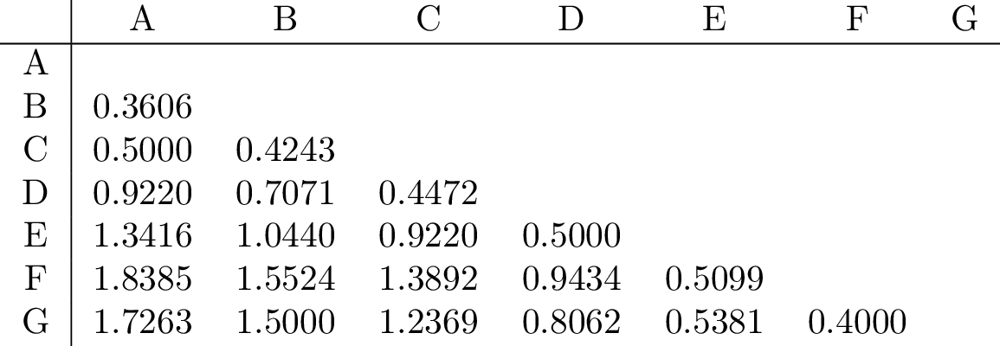
Usaremos el enlace simple. Ahora, vamos a ilustrar los pasos que sigue el algoritmo uno a uno, y resaltaremos la distancia mínima en rojo a cada paso.
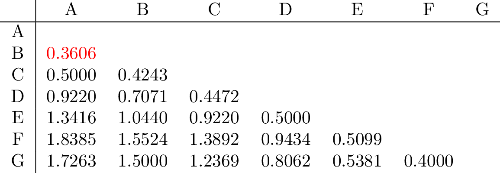 Substituimos \(\{\mathbf{A},\mathbf{B}\}\) por \(\mathbf{H}\) y calculamos 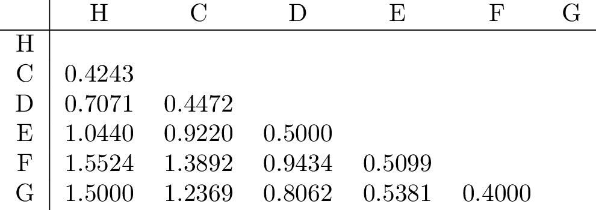
{kind=link}
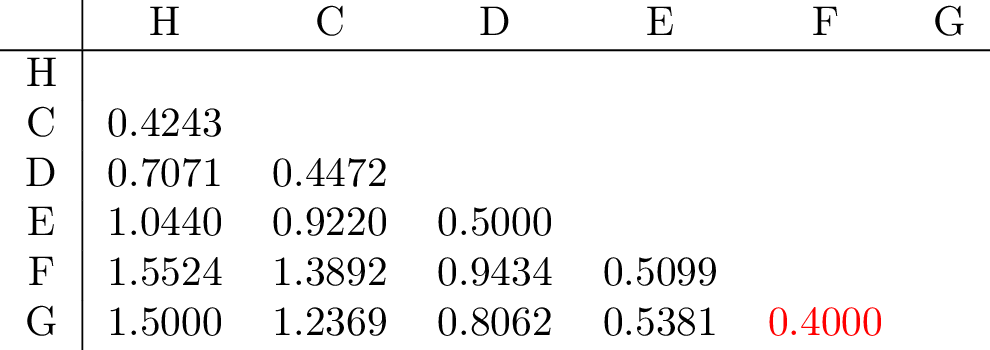 Substituimos \(\{\mathbf{F},\mathbf{G}\}\) por \(\mathbf{I}\) y calculamos 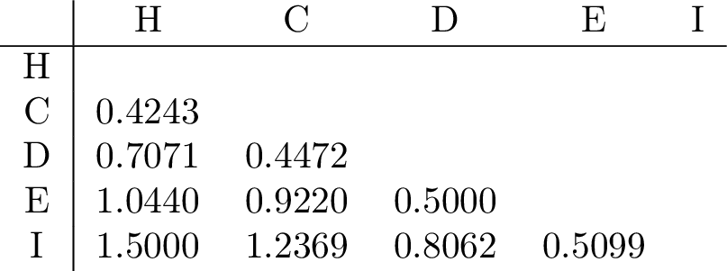
{kind=link}
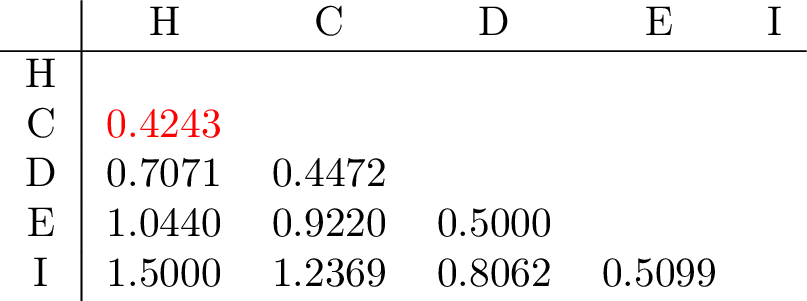 Substituimos \(\{\mathbf{H},\mathbf{C}\}\) por \(\mathbf{J}\) y calculamos 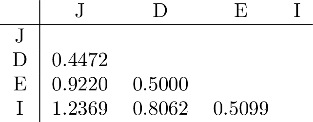
{kind=link}
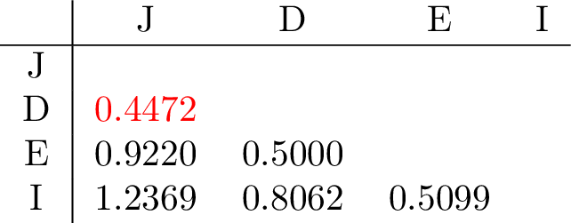 Substituimos \(\{\mathbf{J},\mathbf{D}\}\) por \(\mathbf{K}\) y calculamos 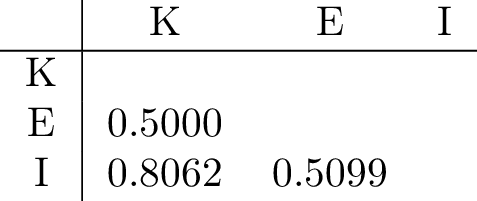
{kind=link}
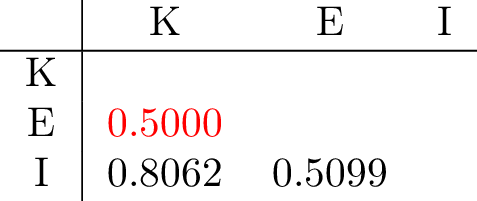 Substituimos \(\{\mathbf{K},\mathbf{E}\}\) por \(\mathbf{L}\) y calculamos 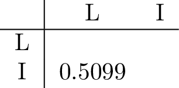
{kind=link}
Finalmente, unimos \(\mathbf{L}\) y \(\mathbf{I}\) en un solo cluster
{kind=link}
5.4.3.3 Limitaciones
Utilizar este método tiene sus complicaciones y restricciones:
- La distancia utilizada es muy importante
- No hay teoría que avale cual método para calcular la distancia entre clusters es el mejor en cada caso
- Realmente, no define directamente clusters, pero podemos obtenerlos cortando a una altura del dendrograma
- Siempre agrupa de dos en dos, y a vegades toma decisiones aleatorias para conseguirlo
5.4.3.4 Ejemplo
load(url("https://www.causeweb.org/tshs/datasets/ultrarunning.RData"))
datos <- ultrarunning %>% as_tibble() %>% na.omit(); datos <- datos[,c(1,4,6,7)] %>% scale()Al aplicar un hierarchical clustering se tiene que escoger una medida de distancia (1-similitud) y un tipo de linkage. En este caso, se emplea la función hclust() indicando la distancia euclídea como medida de similitud y se comparan los linkages complete, single, average y ward.
matriz_distancias <- dist(x = datos, method = "euclidean")
h_cluster_completo <- hclust(d = matriz_distancias, method = "complete")
h_cluster_single <- hclust(d = matriz_distancias, method = "single")
h_cluster_average <- hclust(d = matriz_distancias, method = "average")
h_cluster_ward <- hclust(d = matriz_distancias, method = "ward.D2")Los objetos devueltos por hclust() pueden representarse en forma de dendrograma con la función plot() o con la función fviz_dend() del paquete factoextra.
fviz_dend(x = h_cluster_completo, cex = 0.6)
fviz_dend(x = h_cluster_single, cex = 0.6)
fviz_dend(x = h_cluster_average, cex = 0.6)
fviz_dend(x = h_cluster_ward, cex = 0.6){kind=link}
{kind=link}
{kind=link}
{kind=link}
El conocer que existen 4 grupos en la población permite evaluar qué linkage consigue los mejores resultados. En este caso, los tres tipos identifican claramente 4 clusters, si bien esto no significa que en los 3 dendrogramas los clusters estén formados por exactamente las mismas observaciones.
Una vez creado el dendrograma, hay que evaluar hasta qué punto su estructura refleja las distancias originales entre observaciones. Una forma de hacerlo es empleando el coeficiente de correlación entre las distancias cophenetic del dendrograma (altura de los nodos) y la matriz de distancias original. Cuanto más cercano es el valor a 1, mejor refleja el dendrograma la verdadera similitud entre las observaciones. Valores superiores a 0.75 suelen considerarse como buenos. Esta medida puede emplearse como criterio de ayuda para escoger entre los distintos métodos de linkage. En R, la función cophenetic() calcula las distancias cophenetic de un hierarchical clustering.
cor(x = matriz_distancias, cophenetic(h_cluster_completo))[1] 0.5814256cor(x = matriz_distancias, cophenetic(h_cluster_single))[1] 0.6640045cor(x = matriz_distancias, cophenetic(h_cluster_average))[1] 0.7069825cor(x = matriz_distancias, cophenetic(h_cluster_ward))[1] 0.4163869En este caso, el método de linkage average consigue representar ligeramente mejor la similitud entre observaciones.
fviz_dend(x = h_cluster_average, k=8, cex = 0.4){kind=link}
Una forma visual de comprobar los errores en las asignaciones es indicando en el argumento labels el grupo real al que pertenece cada observación. Si la agrupación resultante coincide con los grupos reales, entonces, dentro de cada clusters las labels serán las mismas.
average_clusters=cutree(h_cluster_average, k = 8)
perfil = percent_rank(ultrarunning$teique_sf) + percent_rank(ultrarunning$steu_b) + percent_rank(ultrarunning$stem_b)
perfil <- cut(perfil, 3, labels=c("Bajo", "Medio", "Alto"))
table(average_clusters, perfil) perfil
average_clusters Bajo Medio Alto
1 9 14 14
2 11 36 22
3 2 6 4
4 1 1 0
5 0 1 1
6 0 1 0
7 0 0 1
8 1 0 0